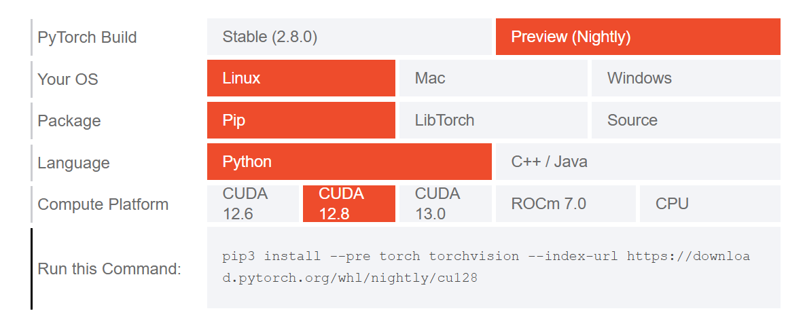

GitCode
GitCode
 退出
退出


实验室新更新了显卡以后，从40系列换成了50系列，本地虚拟环境迁移后大多报错，需要重新配置。因此记录一些配置过程中遇到的问题。安装日期2025年10月14日
一、在Windows11上安装WSL
1. 启用windows子系统及虚拟化
以管理员方式打开power shell，输入命令行并运行：
两条都输入后，重启生效。
2. 更新wsl内核及设置默认版本
3. Ubuntu版本
建议选择20.24、22.04、24.04。
二、配置conda环境
安装miniconda或anaconda环境，具体可参考https://blog.csdn.net/xygsgssd/article/details/144297784
三、在conda环境中创建虚拟环境
创建虚拟环境时建议python环境大于等于3.10
conda create -n myenv python=3.11 -ybash
激活并进入虚拟环境
conda activate myenvbash
四、安装Cuda12.8
50系列的显卡适配的cuda版本貌似只有12.8，我试过12.1、12.4都不行。
conda install cuda-toolkit=12.8 cuda-nvcc=12.8 cuda-compiler=12.8 -c nvidiabash
五、安装PyTorch2.10.0
由于50系列显卡目前并没有稳定版pytorch可用，只能适配Pre（Nightly）版本。

pip3 install --pre torch torchvision --index-url https://download.pytorch.org/whl/nightly/cu128bash
六、安装兼容的DGL
DGL版本兼容是让我最头疼的，找了很多博主的文章，但是大多是说让我把PyTorch和Cuda版本向下兼容，没有解决实质性问题。最后尝试发现可以安装DGL 2.4.0+cu124版本：
pip install dgl -f https://data.dgl.ai/wheels/torch-2.4/cu124/repo.html --no-depsbash
七、测试验证
逐行输入以下命令行，验证上述安装：
- nvidia-smi
- nvcc --version
- conda info --envs
- python -c "import torch; print('PyTorch Version:', torch.__version__)"
- python -c "import torch; print('CUDA Available:', torch.cuda.is_available())"
- python -c "import torch; print('CUDA Version:', torch.version.cuda)"
- python -c "import torch; print('GPU Name:', torch.cuda.get_device_name(0) if torch.cuda.is_available() else 'No CUDA')"
- python -c "import dgl; print('DGL Version:', dgl.__version__)"
- python -c "import dgl; import torch; print(torch.cuda.is_available())"
或者完整GPU训练测试：
- python - << 'EOF'
- import torch
- x = torch.randn(1).cuda()
- print("CUDA Tensor OK:", x)
- print("GPU Name:", torch.cuda.get_device_name(0))
- EOF
希望能帮到各位同僚


 3793
3793


 被折叠的 0 条评论
为什么被折叠?
被折叠的 0 条评论
为什么被折叠?
 到【灌水乐园】发言
到【灌水乐园】发言